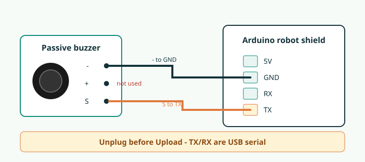

5V
Power for modules that need + / V+ / 5V.
← Robot · Coding (Extras category)
Remove the DX-BT24 Bluetooth module. Use that same 4-pin header on the Arduino robot shield: 5V, GND, RX (D0), TX (D1). Unplug anything on TX/RX before Upload — those pins are USB serial.
Power for modules that need + / V+ / 5V.
Ground — connect module - / G / GND here.
Second digital line if you need another signal. Same upload warning as TX.
Main signal pin for class extras. Coding buzz blocks use D1.
Passive buzzer module. Only two wires: - to GND, S to TX. Leave + unconnected. Prefer Coding → Extras blocks; snippet below matches what Upload generates.

#define BUZZER_PIN 1 // TX on shield header
void setup() {
// tone() sets the pin mode
}
void loop() {
tone(BUZZER_PIN, 880); // A5
delay(300);
noTone(BUZZER_PIN);
delay(200);
}Same header: GND + optional 5V + signal on TX (D1) or RX (D0). Paste into a blank Arduino sketch to try — unplug before every Upload.
- to GND, S to TX (laser also needs + to 5V). Never point a laser at eyes.
#define SIG_PIN 1 // TX
void setup() {
pinMode(SIG_PIN, OUTPUT);
}
void loop() {
digitalWrite(SIG_PIN, HIGH);
delay(500);
digitalWrite(SIG_PIN, LOW);
delay(500);
}- to GND, + to 5V, S to TX. Serial Monitor at 9600 — unplug the module to Upload, then plug back in to read.
#define SIG_PIN 1 // TX
void setup() {
pinMode(SIG_PIN, INPUT);
Serial.begin(9600);
}
void loop() {
Serial.println(digitalRead(SIG_PIN) ? "HIGH" : "LOW");
delay(200);
}- to GND, S to TX (same as LED blink). Passive buzzer prefers tone() — use Coding Extras.
#define SIG_PIN 1
void setup() {
pinMode(SIG_PIN, OUTPUT);
}
void loop() {
digitalWrite(SIG_PIN, HIGH);
delay(200);
digitalWrite(SIG_PIN, LOW);
delay(800);
}P3 and P4 are spare connectors on the turtle shield. Good candidates once we confirm which Arduino pins they map to: LDR or analog temperature (need an analog pin), extra tilt/button on a free digital pin, or a second LED. Blockly / Coding support for P3 and P4 is not ready yet — code and blocks will be added after the pin map is checked in class. Until then, prefer the Bluetooth header examples above.
// Placeholder — replace PIN_P3 / PIN_P4 after we map the silk labels
// #define PIN_P3 /* TBD */
// #define PIN_P4 /* TBD */
//
// Example idea later:
// pinMode(PIN_P3, INPUT);
// int light = analogRead(PIN_P4); // only if that port is analogModule pin labels and examples for common sensor boards.